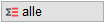
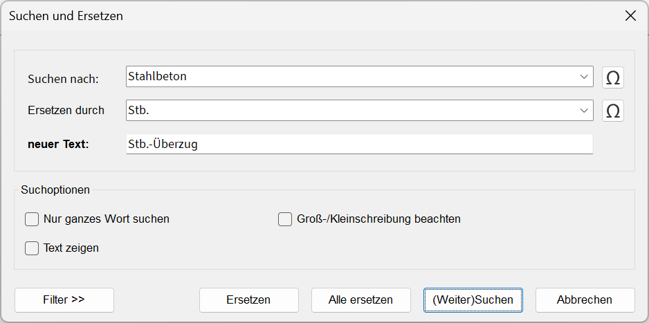

")
Texte werden in der Zeichnung gesucht und können durch einen neuen Wortlaut ersetzt werden.
·Es werden nur Texte durchsucht, die auch geändert werden können. Beispielsweise können Sie über die Filterfunktion Positionsnummern oder Auszugstexte aus der Suche ausschließen.
·Makrotexte können nur mit der Option einzeln bearbeitet werden. Nach dem Ersetzen wird der Makrotext aufgelöst und nur der Textinhalt angezeigt. Makrotexte in Textfeldern können mit SucErs nicht bearbeitet werden.
·Blocktexte, die mit ISBCAD 2025 und früheren Versionen erstellt worden sind, können nicht durchsucht werden. Sie können Blocktexte in durchsuchbare Textfelder konvertieren, indem Sie sie mit der Funktion [Konst 1 | Texte → ändern] anklicken oder mit [Konst 2 | MaßKor] bearbeiten.
1.Text wählen
§Verwenden Sie die Optionen unterhalb der Abfrage, um die Zeichnung zu durchsuchen. [Welchen Text].
|
Ersetzt einen einzelnen Text. Klicken Sie einen einzelnen Text an. Der Dialog Suchen und Ersetzen wird geöffnet und der angeklickte Text wird in das Eingabefeld Suchen nach: geschrieben. Geben Sie einen neuen Text in das Eingabefeld Ersetzen durch ein und bestätigen Sie mit der Eingabetaste. Der Text wird geändert und der Dialog geschlossen. |
|
Durchsucht einen Bereich. Ziehen Sie einen Rahmen um den Bereich, in dem gesucht und ersetzt werden soll. Der Rahmen bleibt bis zum Beenden der Aktion sichtbar. |
 |
Durchsucht die gesamte Zeichnung. Klicken Sie diese Schaltfläche, um die gesamte Zeichnung nach dem Suchtext zu durchsuchen. |


2.Text suchen und ersetzen
 |
|||
Suchen nach: Geben Sie den Text ein, nach dem gesucht werden soll. Dieser kann auch ein Teil eines Wortes sein. Wenn Sie z.B. „Erd“ eingeben, werden alle Wörter, die E R D enthalten, gefunden: "Erdgeschoss" ebenso wie "werden".
Ersetzen durch Geben Sie den Text ein, der anstelle des Suchtextes verwendet werden soll. Klicken Sie alternativ einen Text auf der Zeichenfläche an, um diesen in die Eingabe zu übernehmen. neuer Text: Zur Kontrolle wird hier das Ergebnis des Austauschs angezeigt. Suchoptionen Nur ganzes Wort suchen Wenn Sie hier den Haken in die Checkbox setzen, werden nur Texte markiert, die exakt dem Suchtext entsprechen. Ist der Haken nicht gesetzt, werden auch Textbestandteile gefunden. Text zeigen Ist die Checkbox markiert, werden die Texte in der Originalfarbe sichtbar gemacht. Die Darstellung erfolgt automatisch in einem Zoomausschnitt. Ist die Checkbox nicht markiert, werden die gefundenen Texte in der Originalfarbe ohne Zoom angezeigt. Groß-/Kleinschreibung beachten Hiermit können Sie die Suche ebenfalls präzisieren. Wenn hier kein Haken gesetzt ist, werden Erdgeschoss und ERDGESCHOSS gefunden. Wenn der Haken gesetzt ist, werden nur die Texte angezeigt, die exakt dem Suchtext entsprechen. Filter Der Dialog wird um zusätzliche Filtereinstellungen erweitert. Im Bereich Welche Texte sollen durchsucht werden? können Sie die Suche auf bestimmte Textelemente einschränken.
Ersetzen Der aktuelle Suchtext wird durch den Text ersetzt, der in dem Eingabefeld Ersetzen durch steht. Zur Kontrolle steht der neue Text in dem zugehörigen Anzeigefeld neuer Text. Alle ersetzen Alle gefundenen Texte werden durch den neuen Text ersetzt. Die gefundenen Stellen werden nicht hervorgehoben. Benutzen Sie diese Funktion nur, wenn Sie absolut sicher sind, dass nicht aus Versehen Texte geändert werden, die nicht geändert werden sollen. (Weiter) Suchen Bei jedem Klick wird die nächste Fundstelle angezeigt. Sie können auch die Eingabetaste benutzen. Nach der letzten Stelle erscheint eine Meldung, dass die Zeichnung vollständig durchsucht wurde. Diese Meldung wird auch angezeigt, wenn der Suchtext nicht gefunden wurde. Wenn Sie die Parameter ändern, müssen Sie die Suche neu beginnen. Abbrechen Beendet die Aktion. |
 klappen Sie eine Liste mit den zuletzt eingegebenen Begriffen auf. Durch Anklicken eines Textes können Sie diesen in die Eingabe übernehmen.
klappen Sie eine Liste mit den zuletzt eingegebenen Begriffen auf. Durch Anklicken eines Textes können Sie diesen in die Eingabe übernehmen.Zugehörige Referenz: